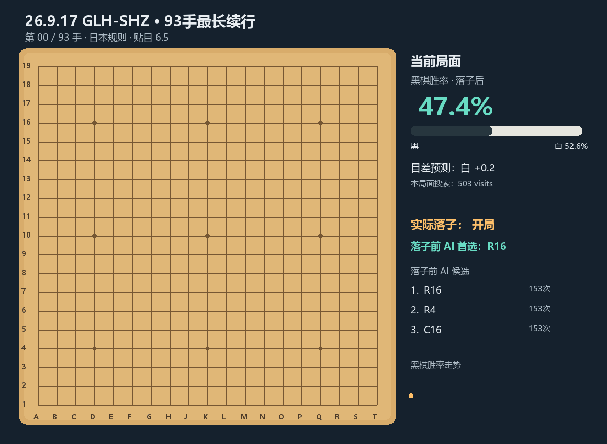

这一期的艺术评论是一局围棋，这怎么不算艺术的一种呢？
时间：26.09.17 15:10开始
对弈双方：glh（黑） shz
对弈地点：明溪植物园凉亭
总评：白棋开局点三三定式忘了，后面面对黑棋打入处理不当，直接崩盘。是黑棋一场比较轻松的拿下。
逐手棋谱
使用按钮、滑块或键盘左右方向键逐手查看。棋盘上的小圆点标记最后一手；SGF 中的 KaTrain 评论会随手数显示。
GIF 预览

艺术评论
这一期的艺术评论是一局围棋，这怎么不算艺术的一种呢？
时间：26.09.17 15:10开始
对弈双方：glh（黑） shz
对弈地点：明溪植物园凉亭
总评：白棋开局点三三定式忘了，后面面对黑棋打入处理不当，直接崩盘。是黑棋一场比较轻松的拿下。
使用按钮、滑块或键盘左右方向键逐手查看。棋盘上的小圆点标记最后一手；SGF 中的 KaTrain 评论会随手数显示。
